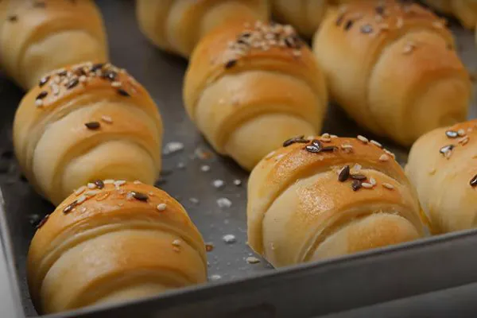
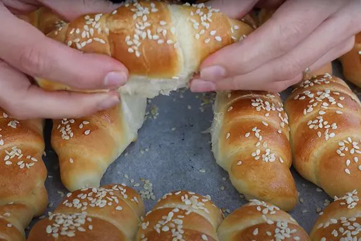
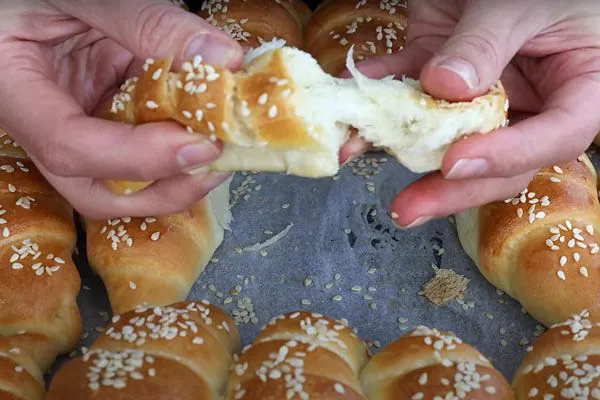
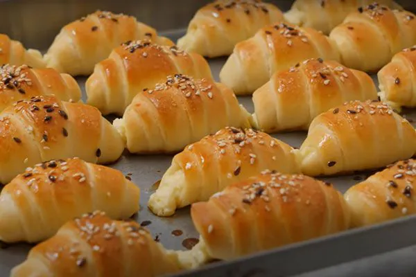
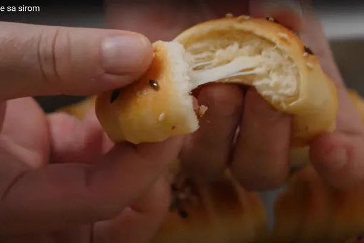
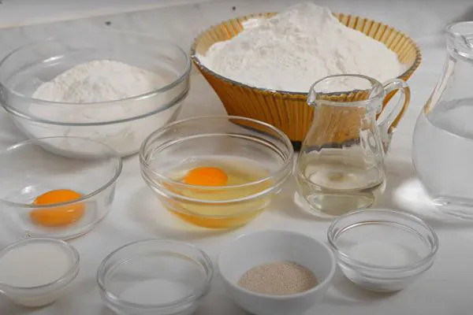
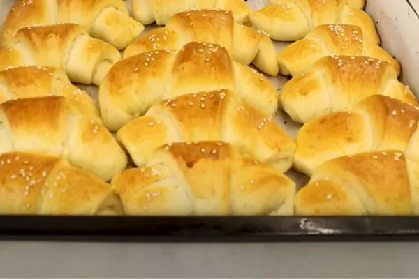
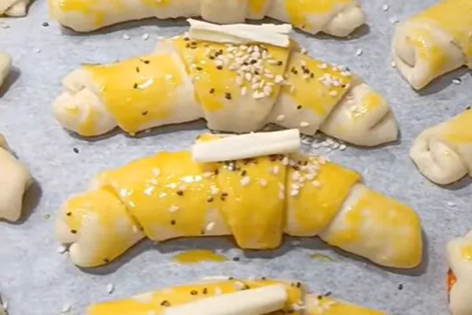
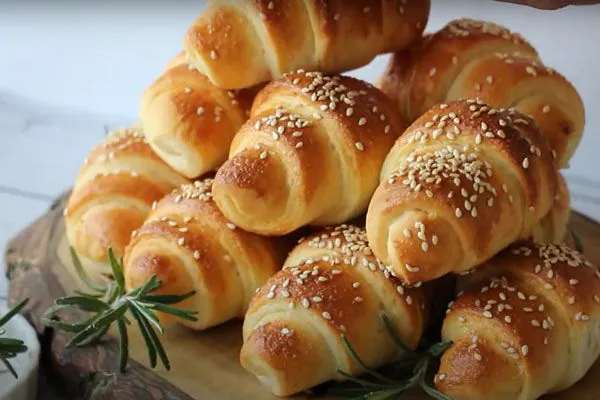

Naš specijalitet
Domaće kiflice – sveže pečene svaki dan
Mekane i sočne domaće kiflice pravljene po tradicionalnom receptu, sa dostavom u Beogradu.

Mekane i sočne domaće kiflice pravljene po tradicionalnom receptu, sa dostavom u Beogradu.
Domaće kiflice su pravljene po tradicionalnom receptu koji se prenosi sa generacije na generaciju. Svaka kiflica je ručno oblikovana i pečena sa puno ljubavi i pažnje. Koristimo samo kvalitetne sastojke kako bismo osigurali savršen ukus i mekoću koja traje danima.
Kiflice pravimo svakodnevno, tako da su uvek sveže kada stignu do vas. Možete ih naručiti u različitim veličinama i količinama, u zavisnosti od vaših potreba. Idealne su za doručak, užinu ili kao dodatak uz obrok.
Naše kiflice su poznate po svojoj mekoći i sočnosti, a tajna je u posebnom načinu pripreme testa i pečenja. Svaka kiflica je jedinstvena, što im daje poseban šarm i autentičnost.
Domaće kiflice sa sirom, šunkom, kulenom, džemom ili eurokremom možete poručiti telefonom ili preko kontakt forme. Cena domaćih kiflica je od 900 do 1200 RSD po kg, a dostavljamo na teritoriji celog Beograda u roku od 24 sata (dostava je 600 RSD, a preko 2500 RSD besplatna). Kompletan cenovnik pogledajte na stranici cene, a uz kiflice probajte i naše štrudle sa makom i štrudle sa orasima.









Mekane kiflice punjene kvalitetnim sirom.
Mekane kiflice punjene šunkom i sirom.
Mekane kiflice punjene kulenom
Slatke kiflice punjene ukusnim eurokremom.
Sočne kiflice punjene domaćim džemom od kajsija.
Klasične kiflice bez punjenja, idealne uz obrok.
Cena domaćih kiflica je od 900 do 1200 RSD po kg, u zavisnosti od punjenja. Prazne kiflice su 900 RSD, sa sirom i džemom 1000 RSD, sa eurokremom 1100 RSD, a sa šunkom i sirom ili kulenom 1200 RSD po kg. Sve cene pogledajte na stranici cene.
Domaće kiflice možete naručiti telefonom na +381 60 0409 622 ili preko kontakt forme na sajtu. Nakon porudžbine kontaktiramo vas radi potvrde i dogovora oko dostave.
Da, dostavljamo na teritoriji celog Beograda u roku od 24 sata od porudžbine. Dostava je 600 RSD, a za porudžbine preko 2500 RSD je besplatna.
Pravimo kiflice sa sirom, sa sirom i šunkom, sa kulenom, sa eurokremom, sa džemom od kajsija i prazne kiflice bez punjenja.
Ne. Sve naše kiflice se prave ručno, od kvalitetnih sastojaka, bez aditiva i konzervansa.
U jednom kilogramu ima oko 30 punjenih kiflica, odnosno oko 35 praznih kiflica.
Najbolje su u roku od 2-3 dana od pečenja. Čuvajte ih na sobnoj temperaturi u zatvorenoj posudi, a za duže čuvanje možete ih zamrznuti.
Pozovite nas ili popunite kontakt formu i uživajte u najukusnijim domaćim kiflicama u Beogradu.
Kontaktirajte nas